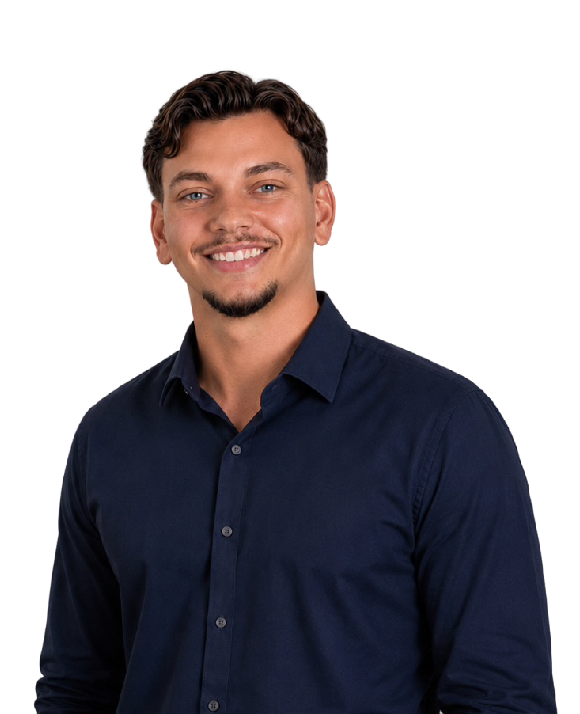
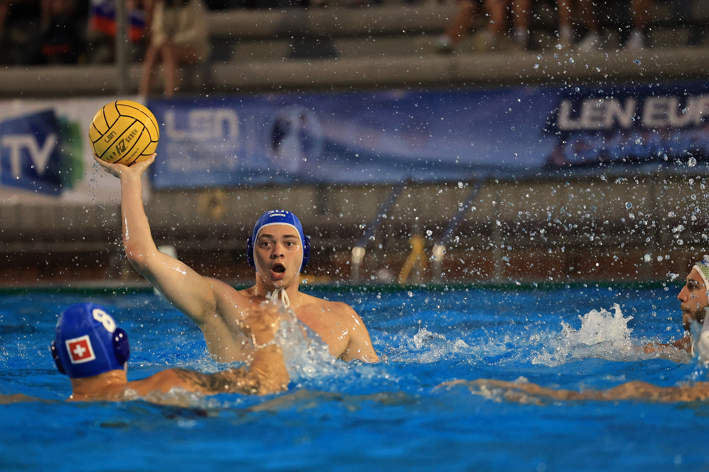
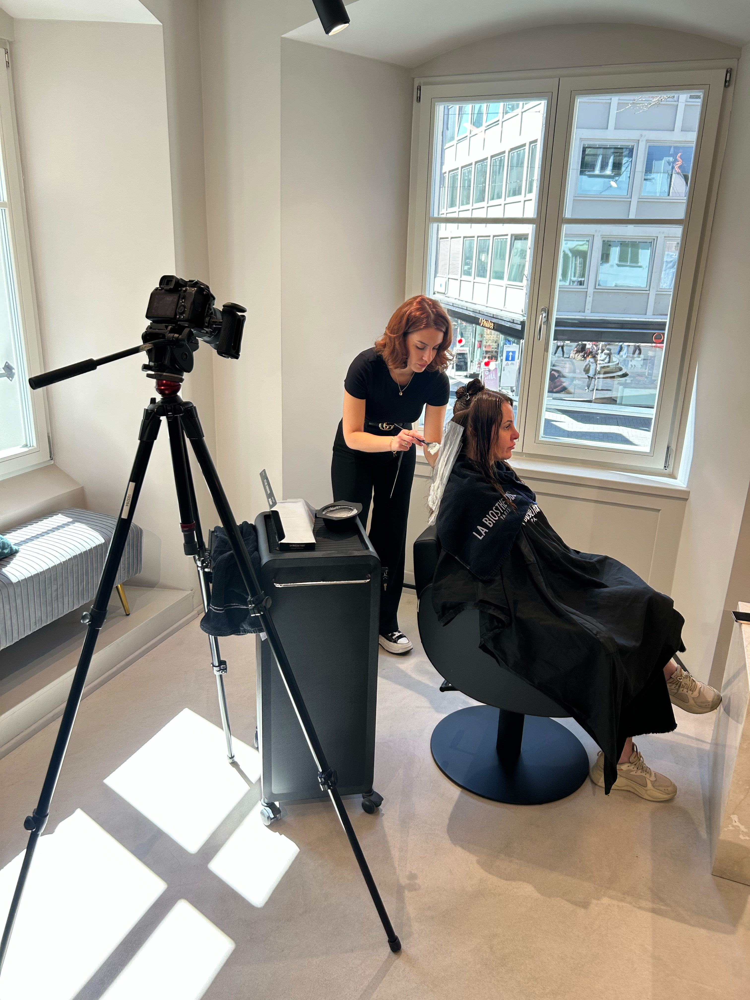
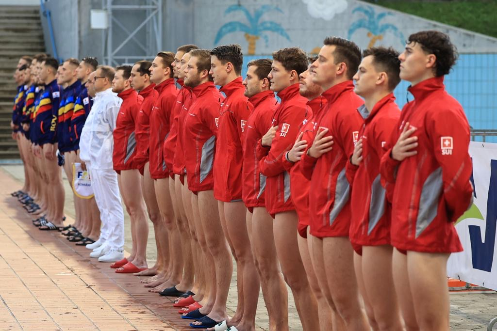
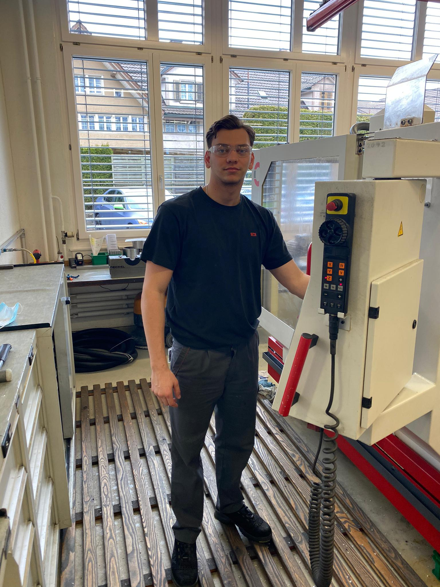
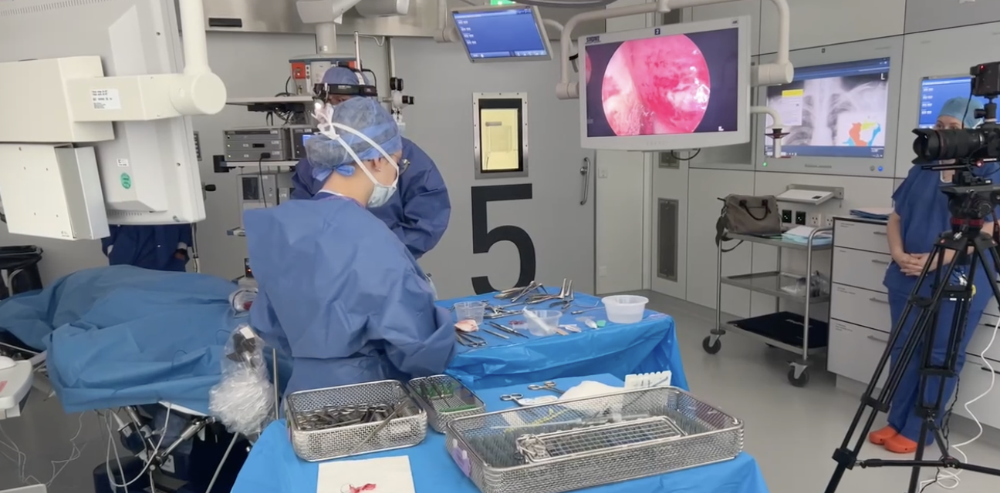
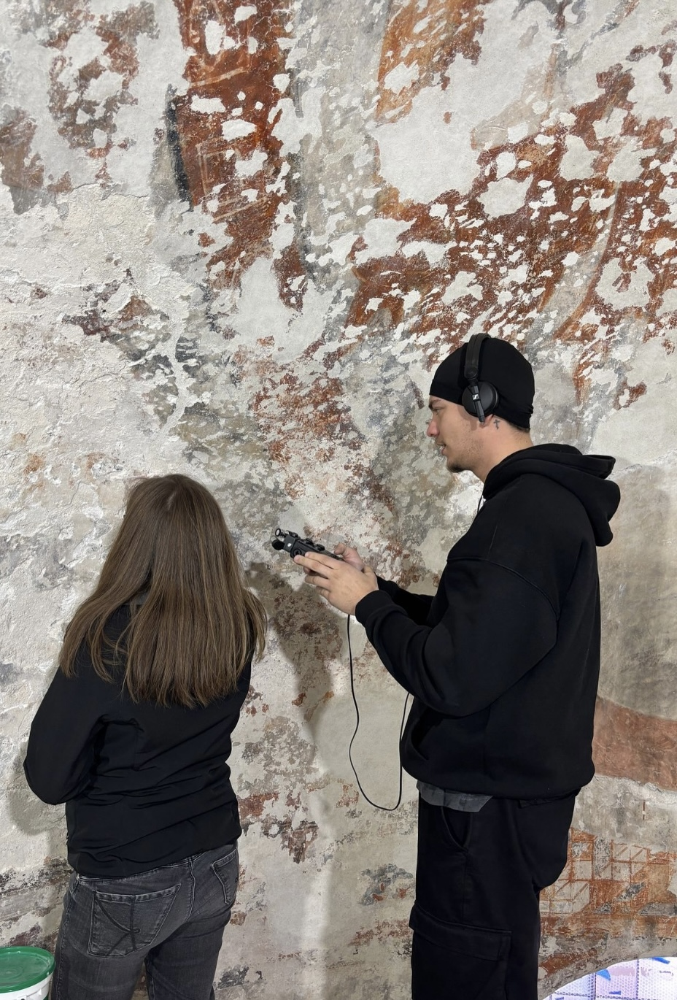
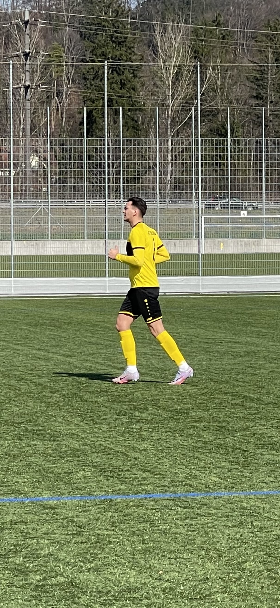
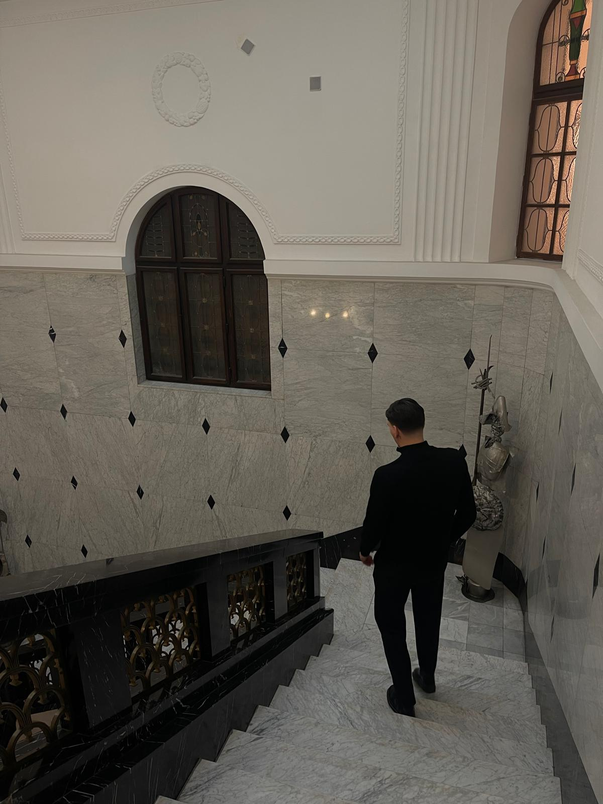

Fokus
About Me
Zwischen Technik, Sport und Kommunikation.
Ich bin Marko Milovanovic. Vollzeitstudent im Bereich Media Engineering, Marketingassistent und kreativer Stratege mit dem Ziel, aus Ideen wirkungsvolle Kommunikation zu entwickeln.

Wer ich bin
Unterschiedliche Erfahrungen. Eine klare Richtung.
Mein Weg ins Marketing begann nicht in einer klassischen Werbeagentur, sondern in der Technik. Durch meine Ausbildung zum Polymechaniker lernte ich, präzise zu arbeiten, Probleme strukturiert zu lösen und Verantwortung für ein Ergebnis zu übernehmen.
Meine Leidenschaft für Kommunikation entdeckte ich durch eigene kreative Projekte und meine Tätigkeit als Freelancer. Dabei erlebte ich, wie Videos, Bilder und Geschichten Menschen erreichen, Aufmerksamkeit erzeugen und Wahrnehmung verändern können. Aus dieser Erfahrung entstand mein Wunsch, mich nicht nur mit der Produktion von Content, sondern auch mit der Strategie und Wirkung dahinter zu beschäftigen.
Heute studiere ich Vollzeit Media Engineering an der Fachhochschule Graubünden. Mein Major ist Corporate Communications Management. Mit meinen Minors Project Management, Digital Advertising & Marketing, Corporate Social Media sowie International Culture & Communications vertiefe ich gezielt meine strategischen, kreativen und organisatorischen Kompetenzen.
Parallel zum Studium arbeite ich zu 60 Prozent als Marketingassistent bei der FSWI Fachschule für Wirtschaft und Informatik. Dort begleite ich Marketingmassnahmen von der ersten Idee bis zur Veröffentlichung und verbinde mein Studium täglich mit praktischer Erfahrung.
Auch der Leistungssport hat mich über viele Jahre stark geprägt. Als Wasserballspieler auf höchstem nationalem Niveau und ehemaliges Mitglied der Schweizer A-Nationalmannschaft lernte ich, Verantwortung zu übernehmen, unter Druck fokussiert zu bleiben und gemeinsam auf ein Ziel hinzuarbeiten.
Arbeitsweise
Kreativ und strukturiert
Antrieb
Ideas into Impact
Momente meines Weges
Nicht nur Stationen. Erfahrungen, die bleiben.








Mein Weg
Erfahrungen, die meine Perspektive geprägt haben.
Von der technischen Ausbildung über den Leistungssport und die Content-Produktion bis zum strategischen Marketing. Jede Station hat beeinflusst, wie ich heute denke und arbeite.
Polymechaniker und CNC-Dreher
Nach meiner Ausbildung zum Polymechaniker EFZ arbeitete ich bei der SFS in Flawil als CNC-Dreher. Diese Zeit legte die Grundlage für meine präzise, zuverlässige und lösungsorientierte Arbeitsweise.
Leistungssport und Nationalmannschaft
Wasserball war während vieler Jahre ein zentraler Teil meines Lebens. Ich spielte auf höchstem nationalem Niveau und war Mitglied der Schweizer Herren A-Nationalmannschaft. Teamarbeit, Disziplin, Belastbarkeit und Fokus wurden dadurch zu einem festen Bestandteil meiner Persönlichkeit.
Berufsmatura Gestaltung und Kunst
Mit der gestalterischen Berufsmatura verlagerte sich mein Schwerpunkt zunehmend von der technischen Produktion hin zu visueller Gestaltung, Medien und kreativer Kommunikation.
Freelancer für Multimedia und Content
Durch eigene Projekte und erste Aufträge sammelte ich Erfahrungen in der Konzeption und Produktion visueller Inhalte. Dabei entdeckte ich meine Leidenschaft dafür, Menschen über Kommunikation zu erreichen.
Ich erkannte, dass erfolgreiche Inhalte nicht nur gut aussehen müssen. Sie benötigen eine klare Botschaft, ein Verständnis für die Zielgruppe und eine Idee, die im Gedächtnis bleibt.
Praktikum Multimediaproduktion
Während meines Vollzeitpraktikums am Kantonsspital St. Gallen plante, produzierte und bearbeitete ich Videos für interne und externe Kommunikationszwecke. Dazu gehörten Interviews, Reportagen und Schulungsinhalte im klinischen Umfeld.
Zusätzlich arbeitete ich an E-Learnings für Lernende und Mitarbeitende. Dabei lernte ich, komplexe und sensible Inhalte verständlich, präzise und visuell ansprechend aufzubereiten.
Bachelorstudium Media Engineering
Im Vollzeitstudium an der Fachhochschule Graubünden verbinde ich Corporate Communications, Marketing, Medienwirtschaft, Projektmanagement, visuelle Gestaltung und audiovisuelle Produktion.
Mein Major Corporate Communications Management gibt meiner Ausbildung einen strategischen Kommunikationsfokus. Ergänzt wird er durch die Minors Project Management, Digital Advertising & Marketing, Corporate Social Media sowie International Culture & Communications.
Projektmitarbeiter bei cdg Beratungen
Bei der Marketing- und Beratungsagentur cdg Beratungen arbeitete ich mit KMU in den Bereichen Marketing, Sales und Organisationsentwicklung. Ich unterstützte die Betreuung und Beratung von Kunden und erhielt praktische Einblicke in unterschiedliche Unternehmenssituationen.
Zu meinen Aufgaben gehörten die Organisation administrativer Abläufe, die Koordination von Terminen und Sitzungen, die Analyse von Betriebskonzepten sowie die Erstellung von Beiträgen für interne und externe Kommunikationskanäle.
Redaktionsmitarbeiter bei Digezz
Neben meinem regulären Studium engagiere ich mich studienbegleitend in der Digezz-Redaktion der FH Graubünden. Die zusätzlich gewählte Tätigkeit wird auf Grundlage des geleisteten Arbeitsaufwands mit ECTS-Punkten anerkannt.
Ich betreue und pflege Inhalte auf der WordPress-Plattform, überarbeite Texte hinsichtlich Sprache, Struktur und Stil und unterstütze die redaktionelle Qualitätssicherung. Gleichzeitig arbeite ich eng mit dem Redaktionsteam und den Content-Produzierenden zusammen.
Marketingassistent bei der FSWI
Parallel zu meinem Vollzeitstudium arbeite ich heute zu 60 Prozent im Marketing der FSWI Fachschule für Wirtschaft und Informatik in Winterthur.
Ich plane, erstelle und bearbeite Content für Social Media, Website und Newsletter. Dazu kommen die Konzeption und Umsetzung von Kampagnen über Meta Ads, Videoproduktionen, SEO-optimierte Website- und Blogbeiträge sowie die Auswertung digitaler Marketingmassnahmen.
Bei der FSWI begleite ich Kommunikationsprojekte von der ersten Idee über die kreative Umsetzung bis zur Veröffentlichung und Optimierung. Dadurch verbinde ich strategisches Marketing täglich mit praktischer Content-Produktion.
Was mich antreibt
Marken, Menschen und Geschichten, die etwas bewegen.
Besonders spannend finde ich Projekte, bei denen Strategie, Kommunikation und kreative Umsetzung zusammenkommen. Mein Ziel ist nicht einfach mehr Content. Ich möchte Kommunikation entwickeln, die eine klare Idee vermittelt, Menschen erreicht und eine spürbare Wirkung erzeugt.